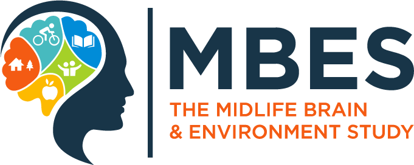
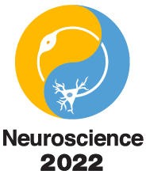
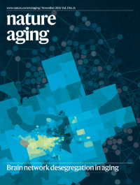
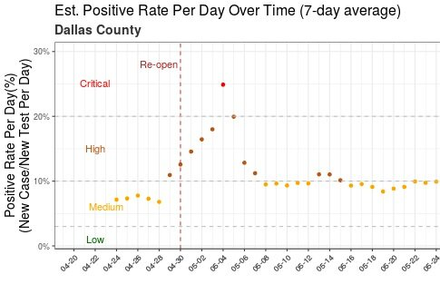
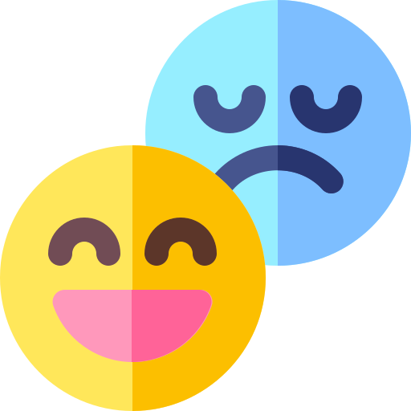
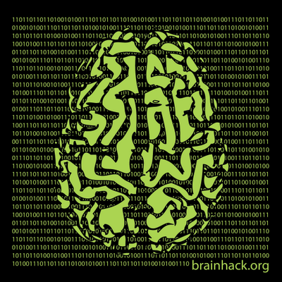
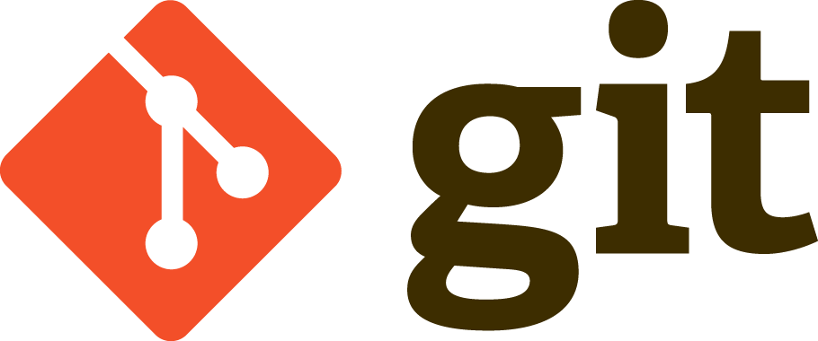
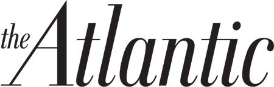
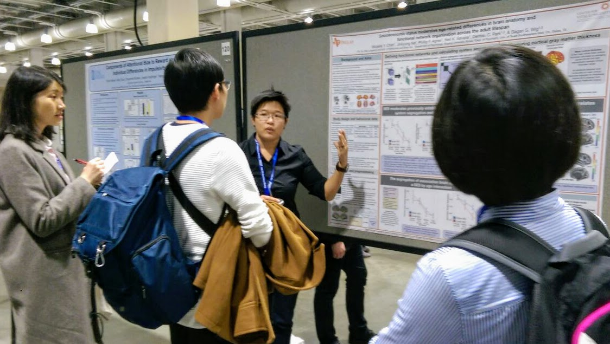
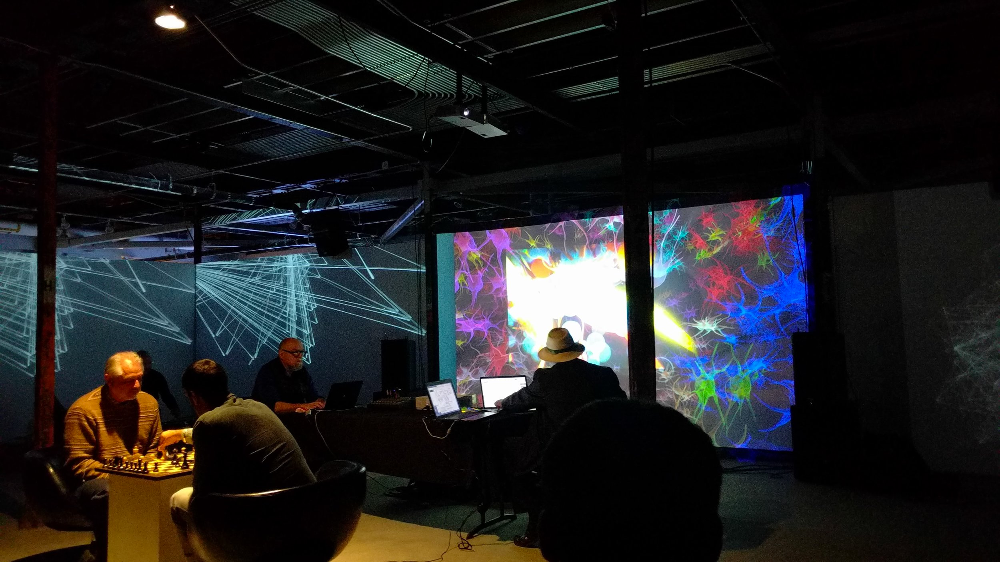

Profile:
I am a cognitive neuroscientist at the Wig Neuroimaging Lab in the Center for Vital Longevity. I manage the Midlife Brain & Environment Study and conducts data analysis on multiple large-scale brain data. I completed my Ph.D. in Cognition and Neuroscience at the The University of Texas at Dallas.
Research:
My research focuses on how our experience and environment interacts with the brain’s functional network organization. My recent work showcases how socioeconomic status moderates the aging of functional brain network (published in PNAS), and how educational attainment can predict decline in brain network organization, which, in turn is prognostic of future dementia severity (published in Nature Aging).
My work uses network science, multivariate statistics and machine learning (R, Python, Matlab, Cytoscape) to explore brain-environment relationships in data collected via multimodal neuroimaging (FSL, SPM, FreeSurfer).
Life:
I have a strong interest in how data analytics is used to unveil hidden patterns in various big data. In my spare time, I train Brazilian Jiu Jitsu, woodworking, and unwind by watching science/education videos (video-list).
Recent Activities
Driven Data PREPARE Phase-1 Winner Winner for Pioneering Research for Early Prediction of Alzheimer’s and Related Dementias EUREKA Challenge (PREPARE) Phase-1 by providing processed Alzheimer’s brain network. Aug, 2024 |
|
|  | The Midlife Brain & Environment Study Check out the longitudinal brain study with middle-aged adults our lab is working on! 2021-2025 |
|  | Lab presentations at Society for Neuroscience 2022 Amazing works led by students at the lab: Individualized targeting of TMS using RSFC (PA); Cross-spices patterns of large-scale network (EWN); Effects of AD and aging on RSFC networks. Nov, 2022 |
BrainExPo Seminar Series: “Patterns of functional brain network in healthy and unhealthy aging” at Brown University Environments and individual level factors interact with the aging of brain network in healthy and unhealthy adults. May 23, 2022 |
|
|  |
Functional brain network desegregation in adults varies with education level; and the degree to which brain network segregation declines predicts dementia severity independent of known Alzheimer’s-related genetic risk and pathology. Nov 18, 2021 |
|  | Dashboard for Texas county-level COVID trend for positive test-rate Positive test rate is one of the frequently quoted metric regarding COVID trend. Most websites/reports have available state-level data. This dashboard makes available county-level data for counties with > 3000 COVID tests performed to date. Jul 8, 2020 |
|  | Meta-analysis on Affect Induction (mood induction) published in Psych. Bulletin A collaboration with colleagues from multiple institutes on the meta-analytic effect of affect induction procedures (i.e., mood induction procedure) is now published at at Psychology Bulletin Journal. Jan 23, 2020 |
|  |
Organized Brainhack Dallas 2019, a regional brainhack event as part of Brainhack Global. Nov 17, 2019 |
|  |
Hosted a Git & GitHub workshop for graduate students and postdocs at the Center for Vital Longevity. See https://gitbookdown.dallasdatascience.com/ for a self-paced online tutorial version of the workshop. Sep 27, 2019 |
|  | Study on brain network and socioeconomic status featured in The Atlantic Recent work revealing relation between adult brain network and socioeconomic status reported by The Atlantic. Published in the Proceedings of the National Academy of Sciences of the USA. May 31, 2018 |
|  | Presented at Cognitive Neuroscience Society Annual Meeting Presented poster at Cognitive Neuroscience Society Annual Meeting 2018 (Boston, MA). Mar 30, 2018 |
|
Received Best Dissertation Award in Behavioral and Brain Sciences. Jul 21, 2017 |
|
|  | Visualizing and Sonifying the brain: Data Stethoscope Collaboration with the ArtSci lab in creating the Data Stethoscope for visualizing & sonifying the human brain network. The Data Stethoscope was used in a performance at 9e2 Evening at Seattle. Nov 21, 2016 |